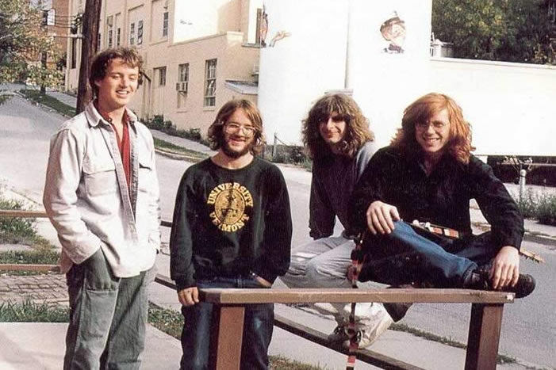

The Start of the Journey
| Home | Band Members | History | Popular Discography | Live |
The Start of the Journey

Phish was formed at The University of Vermont in 1983 by guitarists Trey Anastasio and Jeff Holdsworth, bassist Mike Gordon and drummer Jon Fishman. For their first gig, at Harris-Millis Cafeteria (a location students fondly call "The Grundle") at the University of Vermont on Dec. 2, 1983, the band was billed as "Blackwood Convention." The band was joined by percussionist Marc Daubert in the fall of 1984, a time during which they promoted themselves as playing Grateful Dead songs. Daubert left the band early in 1985, and Page McConnell then joined the group on keyboards and made his debut on Sept. 26, 1985 at a show for WRUV Radio in Burlington. Holdsworth left the group after graduation in 1986, solidifying the band's lineup of "Trey, Page, Mike, and Fish"—the lineup to this day. Following a prank at UVM with his friend and former bandmate Steve Pollak—also known as "The Dude of Life"—Anastasio decided to leave the college. With the encouragement of McConnell (who received $50 for each transferee), Anastasio and Fishman relocated in mid-1986 to Goddard College, a small school in the hills of Plainfield, Vermont. Phish distributed at least six different experimental self-titled cassettes during this era, including The White Tape.This first studio recording was circulated in two variations: the first, mixed in a dorm room as late as 1985, received a higher distribution than the second studio remix of the original four tracks, circa 1987. The older version was officially released under the title 'Phish' in August 1998. The band's identity with its "hometown" of Burlington, Vermont is evident in their actions. By 1985, the group had encountered Burlington, Vermont luthier Paul Languedoc, who would eventually design two guitars for Anastasio and two basses for Gordon. In October 1986, he began working as their sound engineer. Since then, Languedoc has built exclusively for the two, and his designs and traditional wood choices have given Phish a unique instrumental identity. Also during the late 1980s, Phish played regularly at Nectar's restaurant and bar in Burlington. In 1992 the album "A Picture of Nectar," named as a tribute to the owner, featured a large orange with Nectar's photo superimposed subtly within the orange. As his senior project, Anastasio penned The Man Who Stepped into Yesterday, a nine-song concept album that would become their second studio experiment. Recorded between 1987 and 1988, it was submitted in July of that year, accompanied by a written thesis. Elements of the story—known as Gamehendge—grew to include an additional eight songs. The band performed the suite in concert on five occasions: in 1988, 1991, 1993, and twice in 1994 without replicating the song list. Beginning in the spring of 1988, the band began practicing in earnest, sometimes locking themselves in a room and jamming for hours on end. Dubbed "Okipa Ceremonies" (also spelled Oh Kee Pa), one such jam took place at Anastasio's apartment, and a second was at Paul Languedoc's house in August 1989. The band attributes the sessions to Anastasio, who discovered the concept in the films A Man Called Horse and Modern Primitives. The product of one of these sessions was included in the band's first mass-released recording, a double album called Junta, later that year.